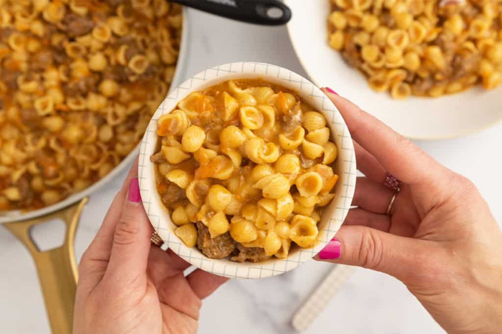

Homemade Hamburger Helper

Description
This take on Hamburger Helper has you make your own base and select your choice of noodle.
- 1 tbsp olive oil
- 1 lb ground beef
- 1/2 minced onion
- 1/2 cup shredded carrot
- 1/4 cup tomato sauce
- 1 tsp garlic powder
- 1/2 tsp salt
- 2 cups small pasta, such as elbow macaroni
- 1 qt beef broth
- 2 cups shredded cheddar cheese
- Set a large pot over medium heat. Add the oil to warm. Then, add the beef, onions, and carrots, and cook until the beef has browned, about 8-10 minutes, breaking up the meat as it cooks. Drain any excess fat from the pot.
- Stir in the tomato sauce, garlic powder, and salt.
- Add the beef broth and turn the heat to high. When it boils, reduce to medium so the liquid simmers with steady but calm bubbles (so just not vigorously).
- Add the pasta to the pot and stir gently.
- Cook until the pasta is just tender and most of the liquid is absorbed, or for about 14-16 minutes. It's OK if there's some liquid remaining, as it will be absorbed as the pasta sits.
- Remove the pot from the heat and stir in the cheese to melt.
Source: https://www.yummytoddlerfood.com/cheeseburger-pasta/
Home